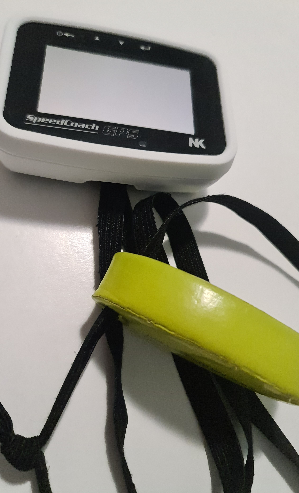

lektroniko lahko večkrat vidimo v čolnih sploh kakšne pametne ure, ki se jih uporablja za štopanje časa, preverjanje srčnega utripa med vadbo, lahko so povezane tudi z čitalcem srčnega utripa.
Poznamo veslaške metre "Štrok-meter", ki imajo praktično vse, preko GPS-a spremlajo lokacijo, lahko se poveže z čitalcem srčnega utripa, štoparica, navigacija tempa, hitrost, ...
Najpomembnejši stvari, ki jih veslač mora med samo tekmo skrbno paziti sta hitrost in tempo.
Tempo ti pove koliko zaveslajev narediš v eni minuti.
Hitrost se pri veslanju meri v povprečju časa, ki ga potrebuješ, da narediš 500m.
Zmeren čas za svetovnega veslača je okoli 7minut na 2km.
